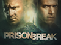

Prison Break is een Amerikaanse televisieserie van de zender Fox. In de Verenigde Staten kwamen de pilot en de tweede aflevering op 29 augustus 2005 op de buis. De serie is geschreven en gemaakt door Paul Scheuring. Aanvankelijk werden er dertien afleveringen besteld, maar vanwege het succes werd dit aantal uitgebreid tot 22 afleveringenPrison Break
Favoriete band
Red Hot Chili Peppers is een Amerikaanse band die funk, rap, punk en pop combineert met rock. De band is in 1983 opgericht in de Californische stad Los Angeles. De band bestaat tegenwoordig uit Anthony Kiedis, Flea, Chad Smith en John Frusciante.Red Hot Chili Peppers